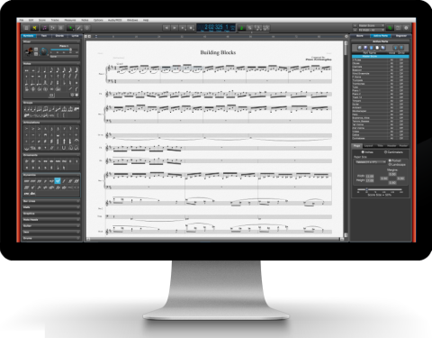

Welcome to Overture, a professional notation program for creating music on your personal computer. It's designed for musicians, composers, arrangers, hobbyist, and multimedia and game developers.
Overture has been extensively redesigned to improve functionality and ease of use while packing many numerous new features into a new Single Window Interface.
Overture is fun to learn and easy to use. You can write music and hear the results immediately.
Overture runs on most Windows or OS X computer. You can install and set it up in just a few minutes. Then you can create piano, band, orchestral, choral, and lead sheet notation and print your arrangements of up to sixty four instruments.
Windows and Macintosh
Since this On-Line Help covers both the Windows and Macintosh versions of Overture, and the versions are slightly different, we've done the following to make it easy for you to find the material you need. Most of it is common to both platforms, so it looks like this. We distinguish different Macintosh keystrokes by displaying them slightly shaded and enclosed in brackets.
For example: Ctrl[Cmd]. Windows users will press the Ctrl key and Macintosh users the Cmd (Apple) key.
When a section or chapter is relevant for only one platform, its title says (Mac) or (PC) as well.
For quick answers to common questions, take a look at Overture's Frequently Asked Questions.
Thank you for choosing Overture 5, and enjoy creating your music!